在图形窗口中，右击表面粗糙度符号并选择编辑。
将在符号上出现一个旋转手柄。
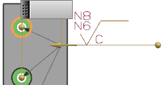
选择手柄端部的球并拖动它，使指引线指向上方的孔。
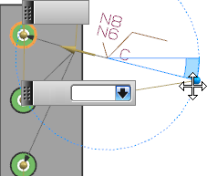
在上部文本 (a1)列表中，选择 N7。
点击确定。
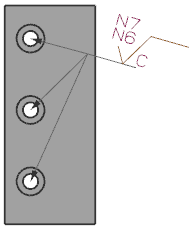
再次右击符号并选择编辑。
在图形窗口中，点击指向中间孔的屏显属性框。
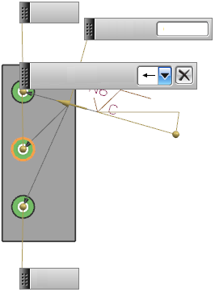
在屏显属性框中点击删除 以移除指向中间孔的指引线。
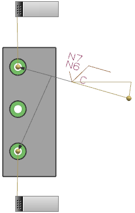
点击指向下方孔的屏显属性框，然后点击删除。
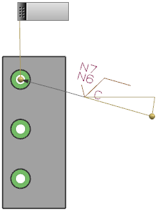
点击指向上方孔的屏显属性框，然后选择位于沉头孔面上的点。
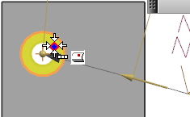
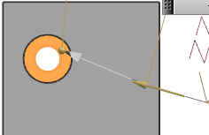
再次点击注释角度球，然后在屏显角度属性列表框中选择0。
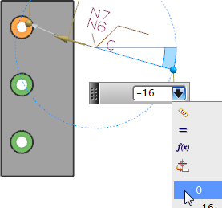
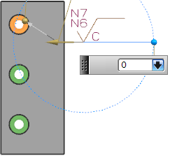
点击表面粗糙度对话框中的确定。
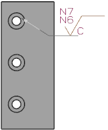
|
注释 |
如果指引线穿过着色模型，则 NX 将修改指引线的颜色，如果您部件中的指引线没有显示，选择首选项→产品制造信息→PMI，然后点击显示选项卡，并选中通过着色模型显示 PMI 复选框。 |
关闭部件。